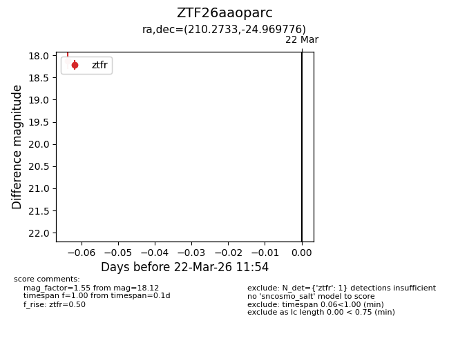
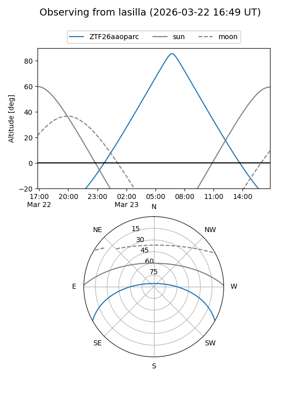
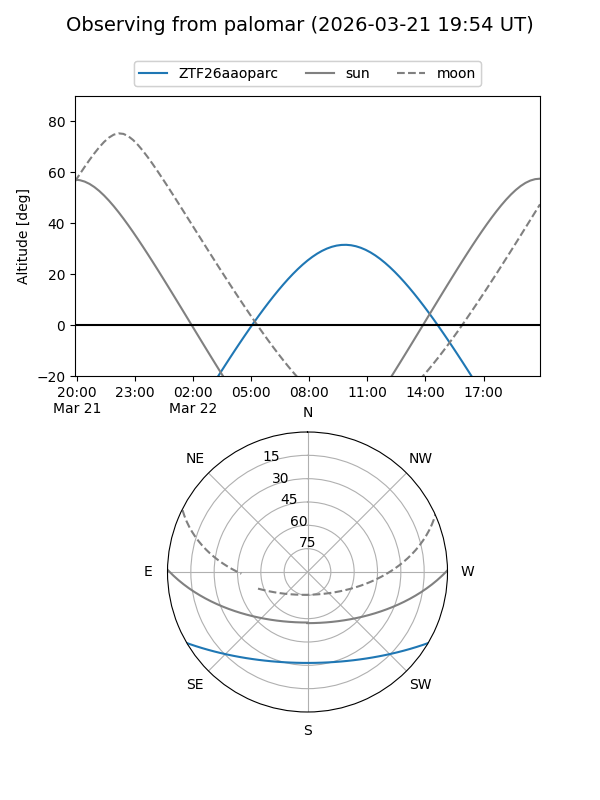

ZTF26aaoparc
Target ZTF26aaoparc at 2026-03-22 11:56
Aliases and brokers:
FINK: link
Lasair: link
ALeRCE: link
alt names
ZTF26aaoparc (ztf,fink_ztf)
Coordinates:
equatorial (ra, dec) = 210.2733,-24.96978
equatorial (HMS+DMS) = 14:01:05.59,-24:58:11.19
galactic (l, b) = (322.3383,+35.26333)
Flags:
Photometry:
last ztfr=18.12
1 ztfr detections
Lightcurve

Visibility


Additional plots